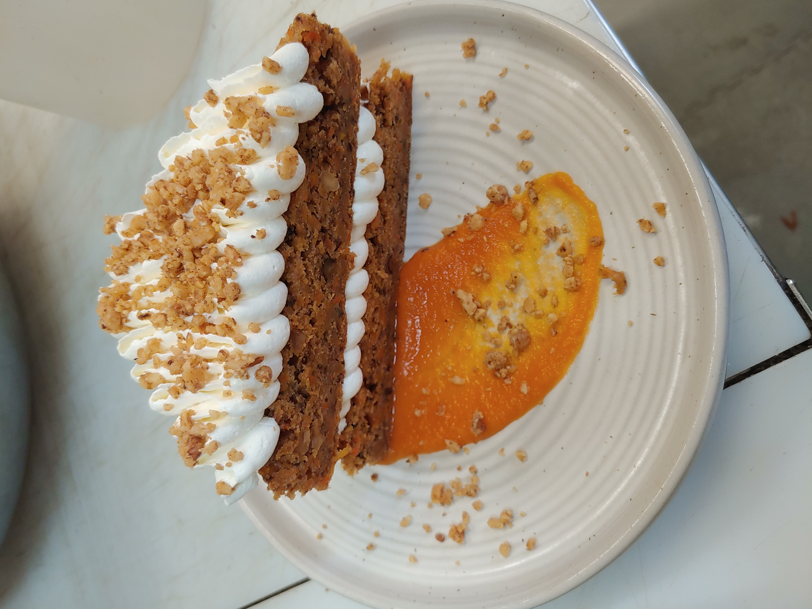

Carrot Cake

This carrot cake is one of the best I've ever had. Super moist and delicious. You'd never know there were vegetables in it.
For this recipe you'll need:
- Box Grater
- Kitchen Scale
- Measuring Spoons
- Stand mixer with whisk and paddle attachments
- 8" round pan
This Recipe makes one 8" cake and enough icing to turn it into a two layer cake.
Ingredients:
- 150g – Walnuts Roasted
- 75g – Fine Crushed
- 75g – Rough Crushed
- 454g – Carrots, finely grated
- 240g – Buttermilk, room temp
- 1 Tbsp – Ginger, fresh grated
- 2 tsp – Vanilla
- 325g – All purpose flour
- 1 Tbsp – Cinnamon
- 8g – Baking Powder
- 6g – Salt
- 6g – Baking soda
- 1 tsp – Ginger, ground
- 1/4 tsp – Clove
- 200g – Eggs
- 150g – Sugar
- 150g – Brown sugar
- 226g – Nuetral oil
Instructions:
- Set oven to 350°F
- Oil the cake pan and cut a piece of parchemnt to fit the bottom of the pan. Place it in the pan and apply oil to the parchemnt aslo.
- Combine the carrots, buttermilk, fresh ginger, and vanilla in a bowl.
- Combine the finely crushed nuts, flour, cinnamon, baking soda, baking powder, salt, ground ginger, and clove in a separate bowl.
- Beat the eggs and both sugars on high speed until they reach ribbon stage in your stand mixer with the whisk attachment.
- Switching the mixer to medium, stream in the oil until incorporated.
- Switch to the paddle attachment and on a low speed alternate adding the dry and wet ingredients.
- Finally fold in the rough chopped nuts and pour into the prepared pan.
- Place the pan on the middle rack of the oven and bake 25-28 minutes or until cake tester comes out clean from the center.
- allow cake to cool in the pan.
- While cooling prepare the Cream Cheese Icing
- Once the cake is completely cool cut in half evenly to get two identical rounds.
- Pipe icing in a zigzag fashion fully covering the top of the first round and place the second round upside down ontop of the first.
- Apply Icing to the top of the cake in a similar zigzag fashion.
- Finish cake by sprinkling with crushed nuts and a light dusting of cinnamon.